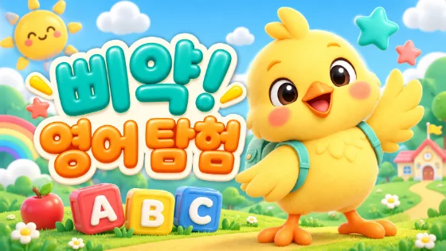

왼쪽 벽
아이디어와 실제 작품아이디어를 꺼내는 곳
무엇을
만들까요?
교실의 작은 질문이
작품의 시작이 됩니다.
나만의 픽셀 그림을 만들어요.
?
L1
배움이 놀이가 되는 작품
수학을
플레이!
 텐팡
텐팡수를 조합하며 즐기는 게임

영어도 작품으로익숙한 수업을 새롭게 만나요.
L2
생활 속 아이디어까지
만들고,
함께 써요.
 이미지 편집기
이미지 편집기필요한 도구를 직접 떠올려요.
 송편 만들기
송편 만들기우리의 이야기도 작품이 됩니다.
L3
나나쌤 공개 사용 허용 작품 예시입니다.
학생의 학습 성과로 표기하지 않습니다.
 작품이 모이는 라운지
작품이 모이는 라운지